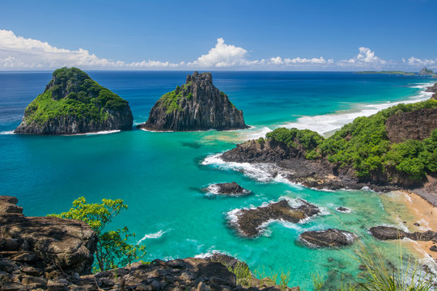
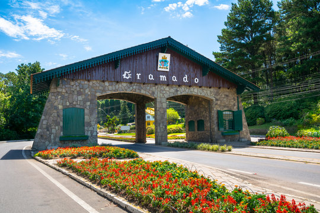
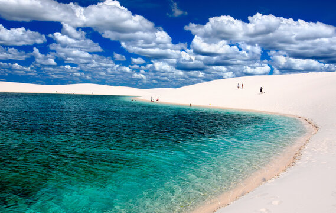

Destinos Nacionais
Explore as maravilhas do Brasil! Conheça praias paradisíacas, cidades históricas e paisagens naturais incríveis.

Fernando de Noronha
Um arquipélago com águas cristalinas, vida marinha exuberante e praias entre as mais belas do mundo.

Gramado
Uma cidade charmosa, com clima europeu, ótima gastronomia e atrações durante o ano inteiro.

Lençóis Maranhenses
Um deserto com lagoas de água cristalina que se formam entre dunas gigantes. Um espetáculo natural único.